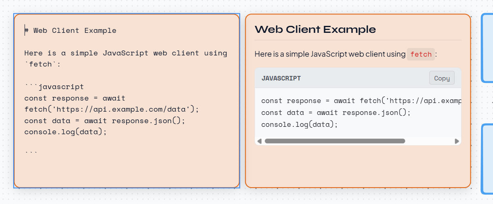
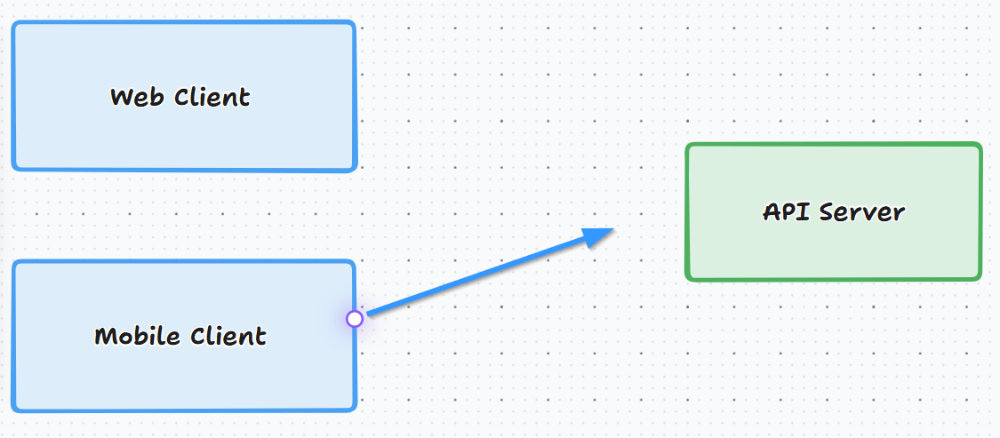
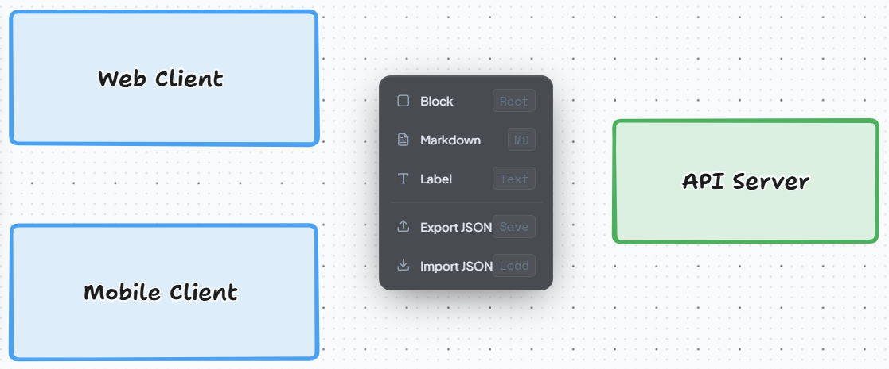

A minimalist, keyboard-friendly flowchart and design board tailored for developers. Featuring custom markdown shapes and edge-aligned snapping.
We added crucial features to standard tldraw shapes to better match coding structures, note-taking lists, and layout design.
Structured note-taking straight on your canvas. Create tables, bullet points, headers, rules, and code blocks that scroll internally when hovered to prevent background canvas panning.

Hover near the edge of any block to reveal a white pinpoint, allowing you to drag and create links without switching tools. For alignment, it utilizes tldraw's native snapping behavior out-of-the-box.

Instantly summon a custom quick-insert menu right under your cursor with Ctrl + Shift + Click on empty areas. Spawn shapes, notes, and trigger file actions without repetitive trips to the toolbar.

Import diagram files without losing your current progress. Merging automatically offsets shapes and groups them under selection, preserving your active canvas layout.
Set up and run your custom diagramming workspace locally on your system in under 2 minutes.
# 1. Clone the project
git clone https://github.com/chanyutl/tldiagram.git
cd tldiagram
# 2. Install package modules
npm install
# 3. Fire up the local server
npm run dev